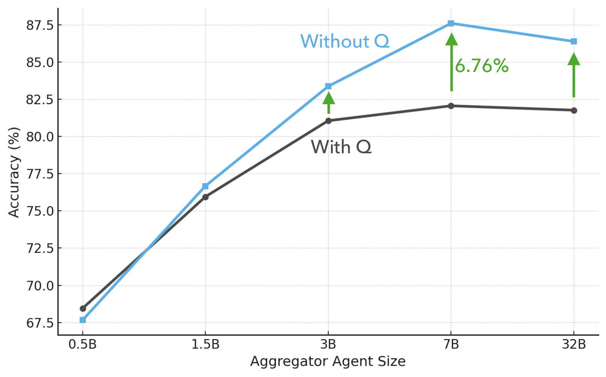

Recent advances in multimodal question answering have primarily focused on combining heterogeneous modalities or fine‑tuning multimodal large language models. While these approaches have shown strong performance, they often rely on a single, generalized reasoning strategy, overlooking the unique characteristics of each modality—ultimately limiting both accuracy and interpretability.
MAMMQA is a multi‑agent QA framework for multimodal inputs spanning text, tables, and images. Our system includes two Visual Language Model (VLM) agents and one text‑based Large Language Model (LLM) agent. The first VLM decomposes the user query into sub‑questions and sequentially retrieves partial answers from each modality. The second VLM synthesizes and refines these results through cross‑modal reasoning. Finally, the LLM integrates the insights into a cohesive answer. This modular design enhances interpretability by making the reasoning process transparent and allows each agent to operate within its domain of expertise. Experiments on diverse multimodal QA benchmarks demonstrate that our cooperative, multi‑agent framework consistently outperforms existing baselines in both accuracy and robustness.
Existing multimodal QA often uses a single, generalized reasoning strategy or flattens inputs, overlooking the unique characteristics of text, tables, and images. This limits both accuracy and interpretability.
MAMMQA addresses these limitations with a cooperative, multi‑agent design that makes the reasoning process transparent while letting each agent operate in its domain of expertise.
MAMMQA uses two Visual Language Model (VLM) agents and one text‑based Large Language Model (LLM). The first VLM decomposes the user query into sub‑questions and retrieves partial answers from each modality. The second VLM synthesizes these results via cross‑modal reasoning. Finally, the LLM integrates insights into a cohesive answer.
Architecture — two VLM agents (decompose, cross‑modal synthesis) and one LLM aggregator.
Images can be added for each case (modality disambiguation, cross‑modal join, and a failure example) if available.
ManyModalQA
Splits: 2,036 train / 3,055 dev
MultiModalQA
Cross‑modal share
Splits: 23,817 train / 2,442 dev / 3,660 test
At‑a‑glance stats; cross‑modal proportion shown for MultiModalQA.
MAMMQA’s modular agents yield stronger agreement with expert judgments across benchmarks, improving accuracy and robustness over single‑strategy baselines.
| Methods | Text | Table | Image | Total |
|---|---|---|---|---|
| Human | 92.00 | 89.60 | 94.00 | 91.60 |
| Voting | 23.70 | 22.90 | 15.50 | 21.10 |
| MMQA | 48.60 | 40.40 | 27.20 | 39.70 |
| MMQA† | 59.30 | 46.30 | 29.00 | 46.30 |
| UniMMQA Finetuned T5 Model | ||||
| Base | 46.60 | 60.70 | 30.20 | 45.40 |
| Large | 48.50 | 67.50 | 34.90 | 50.00 |
| 3B | 49.80 | 58.30 | 40.90 | 52.10 |
| OpenAI 4o‑mini | ||||
| CoT | 87.20 | 94.23 | 57.33 | 81.21 |
| CoT* | 68.22 | 70.51 | 59.42 | 66.54 |
| CapCoT | 87.68 | 94.05 | 68.26 | 84.41 |
| ToT | 84.94 | 93.19 | 72.90 | 84.70 |
| Ours | 92.50 | 96.78 | 78.02 | 89.90 |
| Gemini 1.5‑Flash 8B | ||||
| CoT | 86.05 | 91.52 | 68.77 | 82.81 |
| CoT* | 54.93 | 61.15 | 34.77 | 51.41 |
| CapCoT | 85.74 | 91.40 | 63.14 | 81.34 |
| ToT | 86.08 | 86.81 | 62.81 | 79.80 |
| Ours | 89.76 | 94.52 | 77.33 | 87.91 |
| Qwen 2.5 VL 7B Instruct | ||||
| CoT | 59.84 | 68.71 | 45.47 | 58.87 |
| CoT* | 61.80 | 66.73 | 54.53 | 61.46 |
| CapCoT | 83.50 | 92.86 | 71.07 | 83.41 |
| ToT | 81.95 | 90.41 | 69.29 | 81.89 |
| Ours | 87.11 | 96.31 | 77.56 | 87.61 |
| Qwen 2.5 VL 3B Instruct | ||||
| CoT | 70.08 | 75.61 | 50.70 | 66.54 |
| CoT* | 58.77 | 64.55 | 59.51 | 58.77 |
| CapCoT | 80.79 | 91.38 | 67.13 | 80.63 |
| ToT | 82.66 | 86.14 | 68.11 | 80.42 |
| Ours | 88.79 | 94.90 | 72.67 | 86.37 |
Quantitative results on ManyModalQA. Superscript † denotes oracle; * indicates the no‑context (open‑book QA) setting.
| Modality | Img | Tb | Img | Tb | Txt | Tb | Txt | Img | Txt | Total |
|---|---|---|---|---|---|---|---|
| OpenAI 4o Mini | |||||||
| CoT | 33.15 | 53.81 | 66.67 | 84.55 | 55.95 | 77.67 | 64.60 |
| CapCoT | 53.91 | 64.98 | 69.05 | 84.14 | 61.90 | 77.33 | 70.39 |
| ToT | 54.97 | 63.35 | 64.37 | 67.70 | 61.11 | 69.65 | 64.88 |
| Ours | 61.31 | 70.30 | 81.58 | 89.16 | 59.75 | 85.57 | 76.37 |
| Gemini 1.5‑Flash 8B | |||||||
| CoT | 47.41 | 53.38 | 58.88 | 74.73 | 46.43 | 72.82 | 62.16 |
| CapCoT | 47.84 | 50.02 | 55.87 | 74.88 | 39.29 | 72.42 | 60.66 |
| ToT | 36.93 | 43.06 | 52.32 | 53.72 | 33.33 | 70.61 | 53.10 |
| Ours | 51.23 | 54.12 | 57.42 | 83.69 | 42.86 | 79.47 | 65.84 |
| Qwen 2.5 VL 7B Instruct | |||||||
| CoT | 29.11 | 32.58 | 30.66 | 38.75 | 17.86 | 38.28 | 33.84 |
| CapCoT | 48.10 | 53.94 | 60.56 | 71.52 | 41.67 | 71.31 | 61.54 |
| ToT | 55.90 | 47.82 | 52.50 | 60.83 | 41.64 | 64.44 | 57.12 |
| Ours | 50.74 | 55.88 | 63.68 | 81.35 | 53.26 | 80.51 | 67.56 |
| Qwen 2.5 VL 3B Instruct | |||||||
| CoT | 11.86 | 23.71 | 22.14 | 32.25 | 14.29 | 25.52 | 23.15 |
| CapCoT | 48.10 | 42.08 | 47.08 | 64.94 | 39.29 | 65.04 | 53.98 |
| ToT | 42.01 | 43.65 | 48.40 | 52.57 | 33.74 | 66.51 | 52.91 |
| Ours | 33.73 | 43.10 | 45.33 | 62.29 | 35.52 | 67.73 | 52.12 |
Columns: Img, Tb | Img, Tb | Txt, Tb, Txt | Img, Txt, Total. Metric is answer accuracy (%), higher is better. Rows group prompting strategies under each backbone; bold marks best and underline marks second‑best within a row block.
| Model | Single | Multi | Overall |
|---|---|---|---|
| Finetuned Models | |||
| AutoRouting | 51.7 | 34.2 | 44.7 |
| ImplicitDecomp | 51.6 | 44.6 | 48.8 |
| Binder | – | – | 51.0 |
| SKURG | 66.1 | 52.5 | 59.8 |
| PERQA | 69.7 | 54.7 | 62.8 |
| Solar | 69.7 | 55.5 | 59.8 |
| UniRaG | 71.7 | 62.3 | 67.4 |
| AETGA | 69.8 | 64.7 | 68.8 |
| PReasM L | – | – | 59.0 |
| MMQA‑T5 L | – | – | 57.9 |
| UniMMQA (T5 B) | – | – | 67.9 |
| UniMMQA (T5 L) | – | – | 71.3 |
| UniMMQA (T5 3B) | – | – | 75.5 |
| Zero‑Shot Models | |||
| CoT Qwen 3B | 23.75 | 22.24 | 23.15 |
| CoT Qwen 7B | 36.07 | 30.91 | 33.84 |
| Our Agent 3B | 57.72 | 43.39 | 52.12 |
| Our Agent 7B | 73.16 | 58.93 | 67.56 |
Columns: Single (one‑modality), Multi (cross‑modal), Overall (full test mix). Metric is answer accuracy (%), higher is better. Top block shows finetuned systems; bottom compares zero‑shot CoT vs our agent across 3B/7B backbones.
Compared to Tree‑of‑Thoughts (dynamic search), our lean, static 3‑agent pipeline is more accurate and calibrated (Qwen‑7B: 57.12 → 67.56; +10.44; see Table 1), avoiding confidently incorrect answers while reducing compute.
| Model (7B) | Original | Text Shuffle | Irrelevant Context |
|---|---|---|---|
| TreeOfThoughts | 57.12 | 33.01 (−42.21%) | 52.45 (−08.18%) |
| CoT | 33.84 | 31.18 (−07.86%) | 29.54 (−12.71%) |
| CapCoT | 61.54 | 37.47 (−39.11%) | 55.39 (−09.99%) |
| OurAgent | 67.56 | 05.92 (−91.24%) | 63.74 (−05.65%) |
| Model (3B) | Original | Text Shuffle | Irrelevant Context |
|---|---|---|---|
| TreeOfThoughts | 52.91 | 49.22 (−06.97%) | 47.11 (−10.96%) |
| CoT | 23.15 | 20.48 (−11.53%) | 19.62 (−15.25%) |
| CapCoT | 53.98 | 49.22 (−08.82%) | 47.12 (−12.71%) |
| OurAgent | 52.12 | 07.66 (−85.30%) | 48.05 (−07.81%) |
Robustness of different reasoning strategies under perturbations across model sizes.
CoT often answers confidently without grounded evidence. Our agents separate extraction from generation and allow abstention; making the aggregator question‑agnostic further reduces bias toward priors and improves factuality.
Aggregator Agent performance with and without the original question on MultiModalQA.